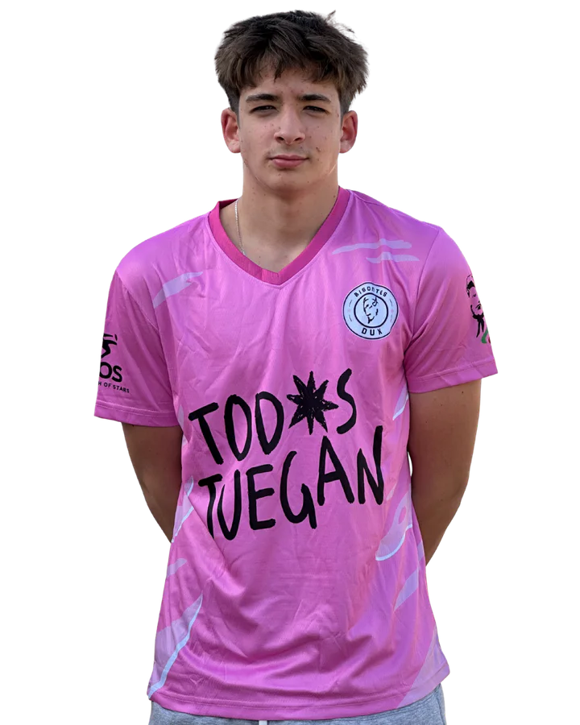

Diego Arrufat Belloso
Cmediocentro ofensivo · Dorsal 99
- Equipo
- Bisontes DUX
- Función
- MEDIOCENTRO OFENSIVO
- Capitán
- Sí
- Dorsal
- 99
- Nacionalidad

Trayectoria
- Malasaña
- 2025–actualidad · Bisontes DUX

mediocentro ofensivo · Dorsal 99